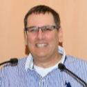
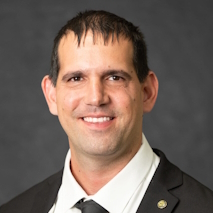
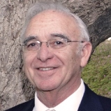
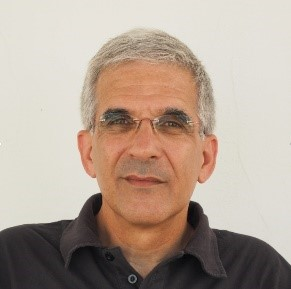
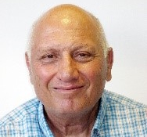
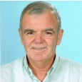
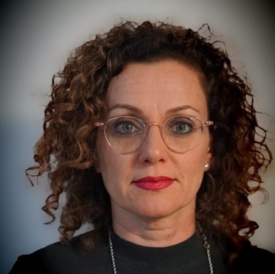

וועדות הכנס
ועדה מארגנת
 ד"ר משה שוקריו"ר יום הכנססמנכ"ל מו"פ רפאל
ד"ר משה שוקריו"ר יום הכנססמנכ"ל מו"פ רפאל

גיא בר יוסףנשיא IncoseILרפאל- ד"ר יניב מרדכייו"ר יום הסדנאותאוניברסיטת ת"א

ד"ר חיים אבירםתע"א ד"ר רם אורוןנובה
ד"ר רם אורוןנובה
 אורן הראלמ"מ נשיא IncoseILאלתא - תע"א
אורן הראלמ"מ נשיא IncoseILאלתא - תע"א
 ד"ר מוטי ליבוביץאוניברסיטת בן גוריון
ד"ר מוטי ליבוביץאוניברסיטת בן גוריון

משה סלםמנכ"ל IncoseIL
ועדת התוכנית
- ד"ר משה שוקרסמנכ"ל מו"פ רפאל
- ד"ר יניב מרדכייו"ר יום הסדנאותאוניברסיטת ת"א
- גיא בר יוסףרפאל
- ד"ר חיים אבירםתע"א
- אורן הראלאלתא - תע"א
- ד"ר רם אורוןנובה

עמירם הראלEnd2End Systems
ד"ר אביגדור זוננשייןהטכניון פרופ' מיכאל וינוקורHIT
פרופ' מיכאל וינוקורHIT

ד"ר מאיר טחןהמכללה האקדמית להנדסה בראודה- משה סלםמנכ"ל IncoseIL
- ד"ר מוטי ליבוביץאוניברסיטת בן גוריון
 ד"ר אירית פלדרפאל
ד"ר אירית פלדרפאל

ענבל רן שפיררפאל יפעת קוזובסקיאלביט מערכות
יפעת קוזובסקיאלביט מערכות
- ד"ר אבי שקדאוניברסיטת ת"א
לורם איפסום דולור סיט אמט, קונסקטורר אדיפיסינג אלית. סת אלמנקום ניסי נון ניבאה. דס איאקוליס וולופטה דיאם. וסטיבולום אט דולור, קראס אגת לקטוס וואל אאוגו וסטיבולום סוליסי טידום בעליק. קונדימנטום קורוס בליקרה, נונסטי קלובר בריקנה סטום, לפריקך תצטריק לרטי.
Dr. Yaniv Mordecai is a senior teaching fellow at Tel-Aviv University, Tel-Aviv, Israel, a Senior Research Scientist at Amazon, Bellevue, Washington, USA, and a former Technion-MIT Post-Doctoral Fellow at MIT’s Engineering Systems Laboratory (2019-21). He holds a Teaching Certificate from MIT (2020), a Ph.D. in information systems engineering from Technion – Israel Institute of Technology, Israel (2016), and M.Sc. (2010, cum laude) and B.Sc. (2002) in industrial engineering & management from Tel-Aviv University, Israel. His research interests include model-based systems engineering, model analytics, cybernetics, interoperable systems, decision automation, operations research, and applications of artificial intelligence for geospatial optimization. Dr. Mordecai is a senior member of IEEE, member of INCOSE and INFORMS, and Board Member of the Israeli Society for Systems Engineering – INCOSE_IL. He won multiple international research awards and is a recognized international expert in modeling and simulation of complex systems.
לורם איפסום דולור סיט אמט, קונסקטורר אדיפיסינג אלית. סת אלמנקום ניסי נון ניבאה. דס איאקוליס וולופטה דיאם. וסטיבולום אט דולור, קראס אגת לקטוס וואל אאוגו וסטיבולום סוליסי טידום בעליק. קונדימנטום קורוס בליקרה, נונסטי קלובר בריקנה סטום, לפריקך תצטריק לרטי.
בעל תואר ראשון במתמטיקה ומדעי המחשב מאוניברסיטת בן-גוריון ולימודי תואר שני במדעי המחשב באוניברסיטת תל אביב. בעל ניסיון של 26 שנה בתעשייה האווירית ו 8 שנים בחברות הייטק.
שימש כמהנדס מערכת , ראש פרויקט וראש תחום בשתי חטיבות בתע"א. ניהול והכשרה של עשרות מהנדסי מערכת מתחומים שונים. שותף לפיתוח לפרויקטים פורצי דרך בחטיבה .
היום בתפקיד ראש מנהל הנדסת מערכת ואחריות על ניהול הידע בגוף אסטרטגיה וטכנולוגיות במטה חטיבת אלתא. כחלק מתפקידו - עוסק בקביעת מתודולוגיה אחידה בחטיבה, ארגון קורסי הכשרה, תמיכה בפרויקטי פיתוח ובהטמעת כלים לעבודת מהנדס המערכת.
חבר בהנהלת INCOSE-IL ומשמש כסגן נשיא.
ב-1980 תואר B.Sc. בהנדסת מכונות וב-1986 תואר מוסמך M.Sc. בהצטיינות בהנדסת מכונות מהטכניון. ב-1993 תואר PhD בהנדסת מכונות בארה"ב באוניברסיטת Delaware מכון לחומרים מרוכבים ‘Center for Composite Materials – University of Delaware (CCM – UD)’ . התמחותי הייתה, בין השאר, בתחומים של מבנים וחומרים חכמים ומסתגלים (Smart & Adaptive) ובנושאי בריאות מבנים (Structural Health Monitoring – SHM).
עבדתי ברפאל מערכות מתקדמות כ-30 שנה ומלאתי מגוון תפקידים הכוללים בין השאר מהנדס מערכת ראשי, ראש פרויקט, ראש מנהלה וראש מטה. לאחר מכן, עבדתי כ-10 שנים בקריה למחקר גרעיני בנגב (הקמ"ג) בתפקידים של משנה למנהל הקמ"ג, סמנכ"ל בכיר ור' תוכנית. כחלק מתפקידיי, פעלתי לגיבוש תפיסות ארגוניות ומתודולוגיות בנושאי ניהול פרויקטים והנדסת מערכת, להטמעה ולהכשרה רחבה של עובדים ומנהלים.
בהיבט האקדמי לקחתי חלק פעיל בהקמת התוכנית להנדסת מערכות באורט בראודה ושמשתי מרצה וחבר בתוכנית מספר שנים. החל מ-2019 יזמתי והקמתי באוניברסיטת בן גוריון בנגב, יחד עם פרופ' קובי בורטמן, את התוכנית להנדסת מערכות שקיבלה את אישורי המל"ג והנהלת האוניברסיטה. מאז ועד היום אני משמש באוניברסיטה כראש התוכנית להנדסת מערכות.
לורם איפסום דולור סיט אמט, קונסקטורר אדיפיסינג אלית. סת אלמנקום ניסי נון ניבאה. דס איאקוליס וולופטה דיאם. וסטיבולום אט דולור, קראס אגת לקטוס וואל אאוגו וסטיבולום סוליסי טידום בעליק. קונדימנטום קורוס בליקרה, נונסטי קלובר בריקנה סטום, לפריקך תצטריק לרטי.
Education
- 2006-2010: Ph.D. in Mechanical Engineering, Technion, Haifa. “Control of Flexible Systems with Elements Governed by the Wave Equation”
- 1990-1993: M.Sc. in Mechanical Engineering, Technion, Haifa. “Internal Model Control Analysis Using Operator”
- 1986-1990: B.Sc. in Mechanical Engineering, Technion, Haifa.
Professional experience
- 1994-Now: Rafael, several Systems Engineering and Program Management positions.
- 1994: Electrical Company, Research Department.
לורם איפסום דולור סיט אמט, קונסקטורר אדיפיסינג אלית. סת אלמנקום ניסי נון ניבאה. דס איאקוליס וולופטה דיאם. וסטיבולום אט דולור, קראס אגת לקטוס וואל אאוגו וסטיבולום סוליסי טידום בעליק. קונדימנטום קורוס בליקרה, נונסטי קלובר בריקנה סטום, לפריקך תצטריק לרטי.